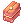

Leveling Guide/Español
Jump to navigation
Jump to search
Esta guía es una compilación de las maneras mas optimas/efectivas de leveo para novatos. Asegúrate de consultar las Guias de clase (Actualmente en inglés) disponibles para encontrar guías especificas de leveo para cada clase.
Avanza a tu primera clase
- Escribe @go 50 o @go Main para dirigirte al Main office donde conseguirás tu primera clase
- Asigna tus skill points (ALT + S), luego ve hacia la izquierda detrás del mesón encontraras al Job Master. Habla con el y elige tu primera clase.
Novice
- Una vez creado tu personaje, comenzarás en una plataforma por encima de Prontera. Aquí es donde tu aventura comienza!
- Entra en el portal para empezar el Tutorial y sigue las instrucciones que se te van dando en él.
- Si decides omitir el tutorial, puedes hablar con la Academy Receptionist que se encuentra dentro de Izlude Academy.
- Habla con el NPC y selecciona Register for the Academy e instantáneamente alcanzarás el Job Lv 10 que te permitirá elegir tu primera clase.
NOTA: Si decides utilizar el método tradicional para obtener tu primera clase, visita al Job Master de todos modos. Recibirás un  Novice Package y un  Ring of Experience: incrementa la experiencia recibida de los mobs en un 20% hasta alcanzar el nivel base 100, este anillo expirará 3 días después de hablar con Job Master.
Ring of Experience: incrementa la experiencia recibida de los mobs en un 20% hasta alcanzar el nivel base 100, este anillo expirará 3 días después de hablar con Job Master.
Ring of Experience: incrementa la experiencia recibida de los mobs en un 20% hasta alcanzar el nivel base 100, este anillo expirará 3 días después de hablar con Job Master.
Una manera fácil de conseguir tus primeros job levels
- Escribe @go 40 para ir a Lasagna, la ciudad Doram.
- Ve con Healer Haru que se encuentra en
@navi lasagna 223/125. - Háblale y selecciona la opción About First Aid posteriormente ganarás experiencia.
- Si completaste la Basic Medical Botany quest en Criatura Academy y conseguiste
 Red Herb, podrás seleccionar la opción About Medical Botany dos veces seguidas.
Red Herb, podrás seleccionar la opción About Medical Botany dos veces seguidas.
Eden Group
Artículo principal: Eden Group (en inglés)
- Antes de unirse al Eden Group, use el Warper> Dungeons> Payon Dungeon.
- Ponga 9 en DEX y ponga el resto en STR / AGI si es una clase física.
- Si eres una clase de magia, pon el resto en INT.
- Si eres un Archer / Gunslinger, coloca el resto en DEX / AGI.
- Coloca las Novice Red Potions en tu barra de skills.
- Mata Zombies y sube de nivel hasta que tengas 220 HIT. Luego cambia a Skeletons.
- Alcanza base level 26, luego usa @go eden.
- Ponga 9 en DEX y ponga el resto en STR / AGI si es una clase física.
- Ve hacia el norte y habla con Secretary Lime Evenor y escoge la opción Join the Eden Group.
- Habla con Instructor Boya y acepta sus quests.
- Regresa al sur y utiliza Warper > Dungeons > Payon Dungeon.
- Sal de la dungeon y justo a lado de la entrada habla con Eden Member Karl.
- Usa @go eden y habla con Instructor Boya.
- Ve hacia el este y coloca el mouse sobre la gran puerta gris y haz clic en ella.
- Entra al warp del noreste.
- Habla con Administrator Michael y escoge la opción To get supplies.
- Algunas jobs pueden choose between weapons, se cuidadoso.
- A partir de este punto, haga las misiones de la Eden Board hablando con las boards en la sala principal.

Desde Nivel 71
- Habla con Mission [71 - 85] y toma a Glast Heim> Evil Druid y Glast Heim> Wraith.
- Habla con Instructor Ur y acepta sus quests.
- Usa el Warper > Dungeon > Glast Heim > Glast Heim St.Abbey.
- Habla con Johan Nota: necesitarás alrededor de 60 DEX para golpear a los monstruos en esta área si eres una clase física.
- Mata 10 Wraiths. Regresa a la Mission [71 - 85] y entregalas. Tómala nuevamente.
- Repita el anterior paso.
- Vuelve con Johan y emprende su nueva quest.
- Mata 10 Evil Druids.
- Regresa a Johan, luego regresa al Eden Group y entrégalo.
- Habla con Instructor Ur.
- Entra por la puerta grande y ve al warp noreste.
- Habla con Toren para obtener nuevo equipamiento
- Sigue haciendo estas dos misiones hasta que llegues al nivel 85.
- Desde este punto, puedes seguir subiendo de nivel con las misiones de nivelación de Eden o comenzar a hacer Gramps.
Desde Nivel 85 (Método opcional para alcanzar instantáneamente el tercer job después del renacimiento)
- Toma las quest 85+ de Gramps y complétalas. Lo más probable es que tengas que permanecer en Gramps incluso después de llegar a 99/50. Importante: No las entregues luego de completarlas.
- Obtenga 6 Holy Water del Tool Dealer y 6 Blue Gemstone, luego complete la quest Cautious Village.
- NO entregues Cautious Village. Deténgase inmediatamente después de dar el último conjunto de Holy Water y Blue Gemstone al último NPC. NO hable con Mumbaki después.
- Renace y obtén un Knife. Ve a Payon Dungeon, y golpea al primer zombie que encuentres (necesitas pociones) y luego conviértete en Primer Job Transcendido.
- Entrega la quest Cautious Village y alcanza nivel 50 en job level inmediatamente. Asciende a High Segundo Job.
- Entrega la quest de Gramps y alcanza 99/69 inmediatamente. Obtenga los últimos niveles de job a través de misiones de las Boards, luego ascienda a Tercer Job.
- Puedes irte a dormir, las Gramps están en cooldown.
Desde Nivel 100 (Método adicional disponible al lado de Eden / Gramps)
Banquet for Heroes
- Si aún no lo ha hecho, haga New World access quest.
- Una vez hecho esto, ve a Prontera para comenzar la línea de quests de Banquet for Heroes
- Se recomienda hacer la principal y parte de las quests opcionales. La lista de la quest incluye:
- Learning About the Families
- Ritual of Blessing
- Room of Consciousness (Recomendado para llevar a un Archbishop a hacer la Instancia)
- The Geoborgs
- The Royal Head Chef
- Todas estas misiones otorgarán un total de 155m Base / Experiencia de job de 120 m simplemente hablando con los NPC's (aparte de la Room of Consciousness) y deberían ser suficientes para que llegues al nivel Base 115 para hacer las 115-145 Gramps.
Desde Nivel 140 (Método adicional disponible al lado de Eden / Gramps)
| Advertencia: Traducción incompleta. |
|---|
Banquet for Heroes
- Si has hecho la questline que se muestra arriba para Banquet of Heroes, desbloquearás 1 quest (ofrece mucha experiencia) y algunas quests diarias repetibles.
- Comienza por comprar Flower.
- Puedes comenzar yendo a la Prontera Prison ubicada al noreste de la sala de banquetes. La información completa de la misión se puede encontrar en Restricted Sector.
- Dentro de la prisión, hay 8 NPC's, 7 de los cuales darán una quest. (3 requieren hablar con los NPC's ubicados en la prisión, 3 requieren que los objetos dropeados por las multitudes en la prisión, y una 1 Flor es mencionada anteriormente..
- Finishing Restricted Sector requires only talking to each NPC inside so you don't need to finish any of their quests. They do give a huge amount of EXP, tho (35m Base/35m Job each).
- There's also 1 quest located at Invaded Prontera (unlocked once you finish Room of Consciousness).
- Use the Warper > Instances > Sky Fortress
- Walk to
prt_q 156/324and speak with the Chief Guard to start the Daily Quest. Full information can be found here Chief Guard Requests.- P.S. All in all, all these quests will give you 400m Base/400m Job EXP and all except one are Daily Quests that is repeatable every 4 AM Server time. You'll still get 295m Base/295m Job everyday by repeating the Daily Quests.
Método alternativo de nivelación para Dorams (Sáltate esos horribles primeros niveles donde eres absolutamente inútil)
- Complete Cautious Village después de salir de Criatura Academy y llegue inmediatamente a 76/50. Completa la Questline de Ur para obtener un set gratuito de armadura Eden. Compra el arma por 250k. Deberías ser el rango de Gramps 85+ en este punto.
Gramps

Información
- En estas quests, se requiere matar a 400 monstruos de dos tipos.
- Los monstruos cazados se rotan una vez al mes..
- Puede encontrar party's en la sede central de Eden o en el canal #lfg.
- Para obtener un contador de muertes en el monstruo, debes estar en la pantalla.
- Hay tres rangos de niveles.
- Nivel 85-114
- Nivel 115-144
- Nivel 145-175
- No puede ingresar a áreas inferiores o superiores a su nivel.
| This quest or instance is repeatable. |
|---|
| The cooldown is 4 hours. |
Tutorial
- Para comenzar la misión, realiza las dos misiones de caza en tu rango de nivel las Monthly Hunts.
- Habla con Gramps y escoge la opción Can you warp me?
- Las party's suelen consistir en ...
- Lurer: Su job es recoger monstruos y llevarlos donde está ubicada la party. (Principalmente rama Swordsman / Thief / Monk)
- AoE: Su job es matar en masa los monstruos traidos a la party por el señuelo. (Principalmente Hunter/Mage/Gunslinger branch)
- Support: Su job es reponer HP / SP y proporcionar buffs. (Principalmente Priest/Sage/Performer branch)
- Damage: Su job es matar a los monstruos individuales que quedan fuera y acosar al Soporte. (Principalmente Thief/Knight branch)
- La configuración habitual de la party es siempre compartir la experiencia, y generalmente cada uno / Individual de drops.
- Tenga en cuenta que si no tiene daños en AoE, pero usted es una clase de Daño, puede serlo y, por favor, SER ÚTIL. No autosigas personas. Defiende a tu Support y ayuda a la party a seguir avanzando.
Tips de nivelación
- EXP Share: 30 niveles básicos. Por ejemplo, si alguien en su party es 175, todos los demás en la party deben tener 145 o más para habilitar compartir EXP.
- Antes de Renacer: Completa varias quest Lv 91-99 (por ejemplo, Rachel / Veins, Glast Heim, quests de Turtle Island) mientras tu personaje esté en Nivel 99/50. Cambia de job y gana suficientes niveles para convertirse en High 1ra Clase (High Swordman, High Thief, High Mage, etc.). Luego, entregue las misiones Nivel 91-99 que ha completado cuando tenía 99/50 para niveles rápidos.
- Puntos de Spawn: El Renewal cambió los puntos de generación de casi todos los monstruos en todo el juego. Si no puede encontrar un determinado monstruo, o si no está seguro de dónde obtener ciertos elementos, intente utilizar los siguientes comandos:
- CTRL + ` : Muestra el mapa de todos los campos en Rune Midgard. Presiona Alt o Tab para alternar nombres de mapas, y el nombre y nivel del monstruo con la cantidad de spawn más alta en el mapa.
- @whereis (Nombre del Monstruo): Muestra una lista de mapas donde un monstruo en particular se genera y la cantidad de spawn.
- @mi (Nombre del Monstruo): Muestra información detallada de un monstruo en particular.
- @whodrops (Nombre del Item): Muestra una lista de monstruos que dropean un elemento en particular y su índice de drop.
- Novice Package: Cada nuevo personaje recibe un paquete que contiene los siguientes elementos:
| Novice Package | Intermediate Package (Lv 50) | Veteran Package (Lv 99) | Master Package (Lv 125) |
|---|---|---|---|
| Ring of Experience (x1) | Intermediate Potion (x150) | Veteran Potion (x150) | Master Potion (x150) |
| Rental Halter Lead Box (x1) | Novice Blue Potion (x15) | Novice Blue Potion (x30) | Novice Blue Potion (x50) |
| Novice Potion (x200) | Novice Fly Wing (x50) | Novice Fly Wing (x50) | Regeneration Potion (x10) |
| Blessing Lv 10 Scroll (x5) | Agility Lv 10 Scroll (x5) | Assumptio Lv 5 Scroll (x5) | Token of Siegfried (x3) |
| Intermediate Package (x1) | Veteran Package (x1) | Master Package (x1) | New Bubble Gum (x2) |